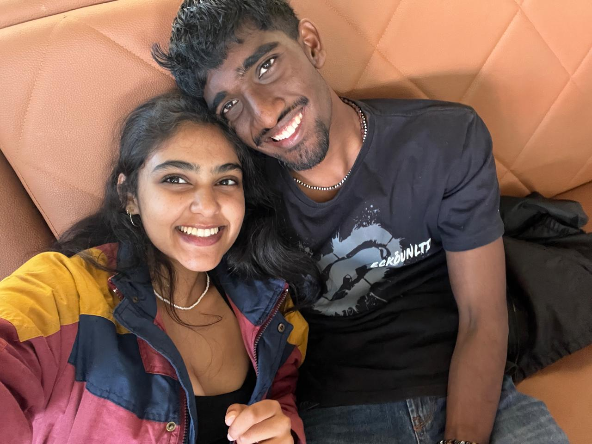

I remember meeting your mother for the second time on that day. There was a lot going on, and only now do I truly understand the weight of it all.
But alongside all the seriousness of the day, I remember having that super strong negroni and for some reason, my hair formed a horn that I haven't been able to live down.
I also fondly remember dicovering your enjoyment people watching and lore building :)